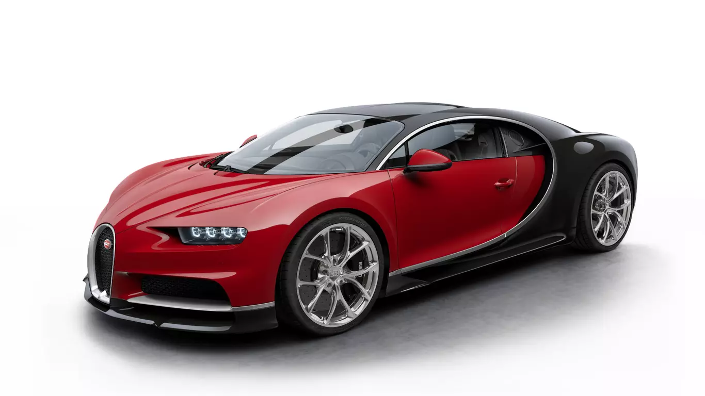
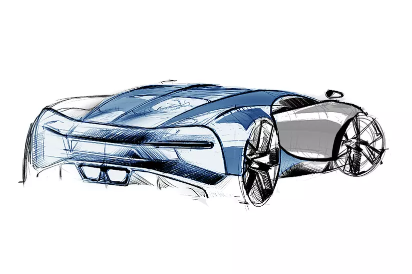
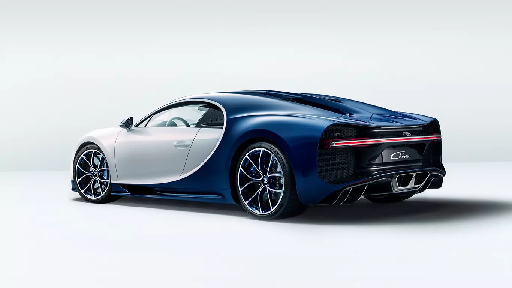
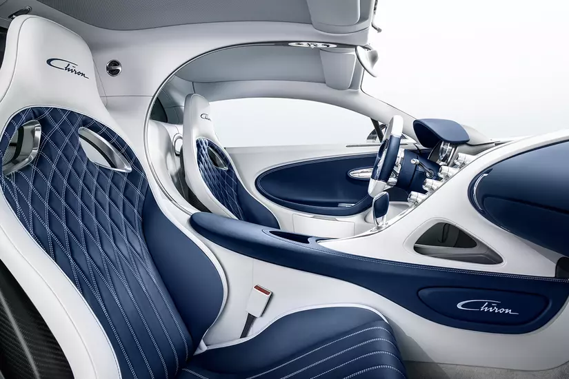
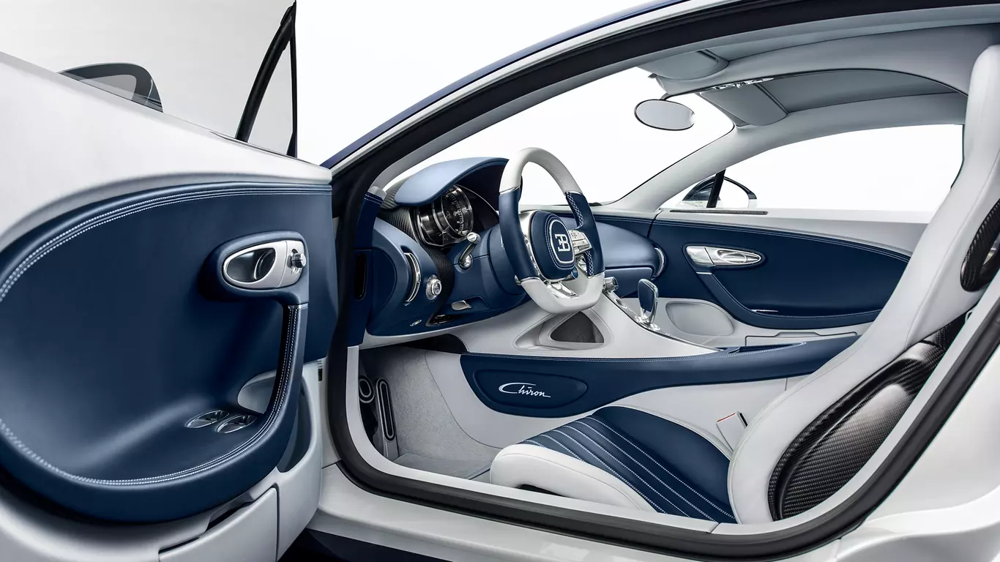
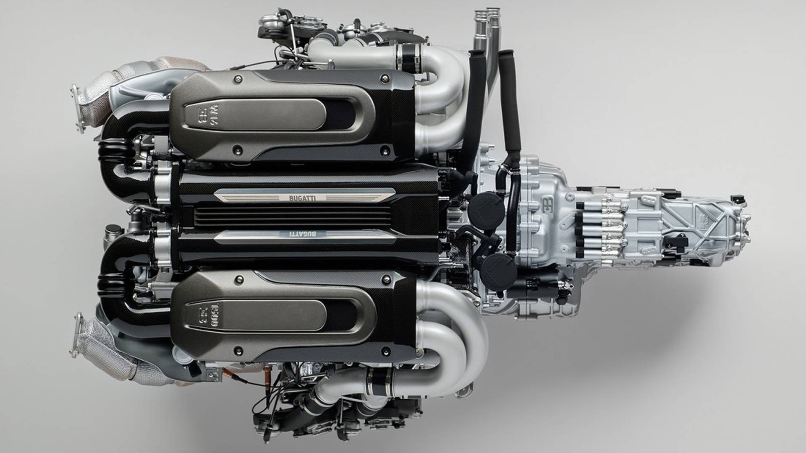

BUGATTI CHIRON
" 
The CHIRON is the fastest, most powerful,
and exclusive production super sports car
in BUGATTI’s history.Its sophisticateddesign,
innovative technology, and iconic,
performance-oriented form make it a unique
masterpiece of art form and technique,
that pushes boundaries beyond imagination.

The Skyview option was developed in accordance with the attributes that It generates a new feeling of speed and space, turning a drive in a BUGATTI with
characterise the CHIRON. The symbolic horseshoe grill, and the distinctive C-bar on Skyview option into an incomparable, three-dimensional experience. The two
the side, still define it as unmistakably BUGATTI, as do its pronounced lines and glass elements are installed on either side of the central fin, which protrudes
generous surfaces. From inside, the glass roof enables a view into another
dimension, flooding the cockpit with natural light.

Mirroring the CHIRON´s exterior signature line,
the LED illumination in the distinctive C-line
the two seats, and reveals the stunning
functional beauty of the interior.
the CHIRON gives the pilot


16 CYLINDER
8,0 L
4 TURBOCHARGER
1500 HP